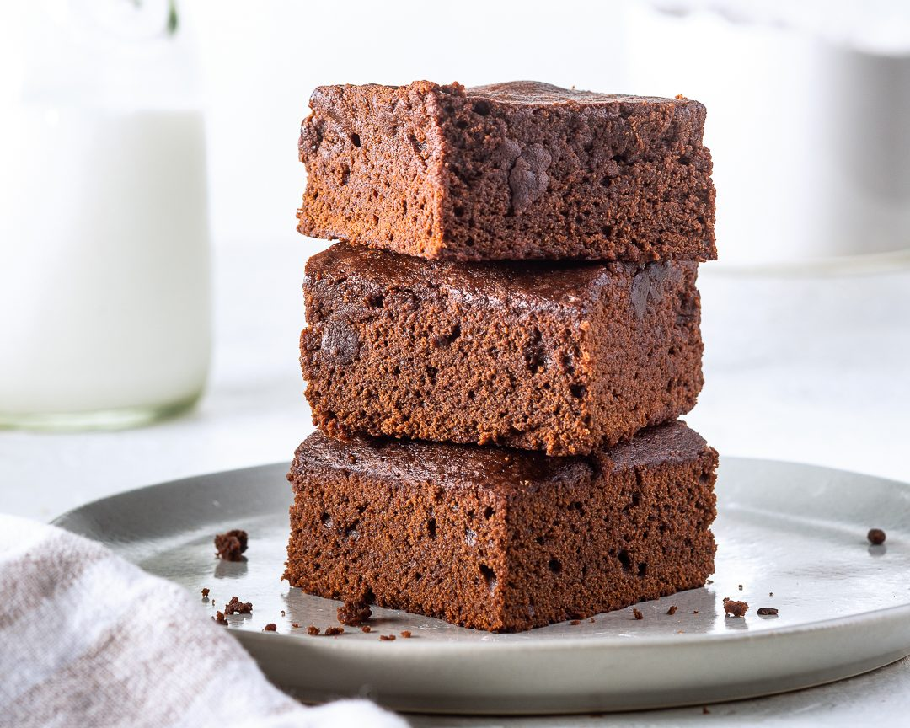

Brownie

Description:
If you're looking for a delicate crumb, bold cocoa flavor, and lofty height, our Cakey Brownies are the answer. Cocoa powder, not melted chocolate, gives these brownies their chocolate flavor, meaning they're less dense and less fudgy, with a matte, slightly crunchy top. We added milk to help tenderize the batter without weighing down the crumb. While still warm, this brownie will have a closer crumb texture, but as it cools, the crumb becomes more cake-like, soft and spongy. Think of this as a brownie version of devil's food cake—satiny and cocoa-rich but light as air. Don't miss the Peanut Butter-Chocolate Chunk Cakey Brownies version as well!
Ingredients:
- 1 cup granulated sugar
- 3/4 cup firmly packed dark brown sugar
- 3/4 cup unsalted butter, melted
- 1 1/4 cups all-purpose flour
- 1 cup unsweetened cocoa powder, sifted
- 3/4 teaspoon baking powder
- 3/4 teaspoon kosher salt
- 3/4 teaspoon instant espresso powder
- 3 large eggs, room temperature and lightly beaten
- 2 teaspoons vanilla extract
- 1/2 cup whole milk, room temperature
Steps:
- Preheat oven to 350°F (180°C). Spray an 8-inch square baking pan with cooking spray. Line pan with parchment paper, letting excess extend over sides of pan.
- In a medium bowl, whisk together sugars and melted butter until smooth and well combined.
- In another medium bowl, whisk together flour, cocoa, baking powder, salt, and espresso powder.
- Slowly add eggs to sugar mixture, whisking until combined. Whisk in vanilla. Add flour mixture in three additions alternately with milk, beginning and ending with flour mixture, stirring just until combined after each addition. Spread batter into prepared pan.
- Bake until a wooden pick inserted in center comes out with a few moist crumbs, 35 to 40 minutes. Let cool in pan for 15 minutes. Using excess parchment as handles, remove from pan, and let cool completely on a wire rack before cutting into bars. Store in an airtight container at room temperature for up to 4 days.